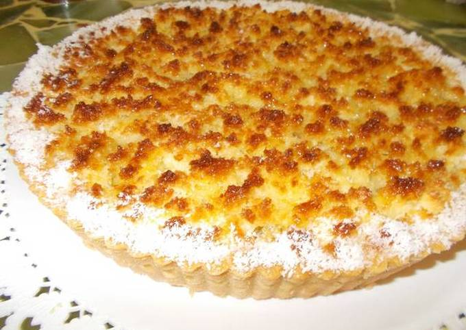

Coconut and dulce de leche cake

The coconut and dulce de leche cake is quite typical in Argentina (like almost everything that has dulce de leche).
In other countries it is also known as coconut cake and cajeta or coconut cake and delicacy,
it is a very sweet cake and for some it can be cloying, but those who know sweet things think it is delicious.
Ingredients for the dough
- 100g of butter
- 200g flour
- 1 egg
For the stuffed
For the coverage
- 150g grilled coconut
- 230g of sugar
- 1 egg
- Nuts(optional)
Follow the steps
- Place the flour in a large bowl. Add a pinch of salt, the melted butter, and an egg.
This coconut cake dough does not contain sugar since the rest of the cake will be very sweet, the dulce de leche is more than enough.
- Mix with your hands until a uniform dough is left. One thing I like about this dough is that it has melted butter,
which saves a lot of time by avoiding the use of softened butter.
- Cover the dough with film and take it to the fridge to rest for 20 minutes.
If you don't have time, you can skip this step, but the dough is much more crispy and rich if we let it rest.
- Now we are going to stretch the dough in a pan. For this we are going to avoid the rolling pin, we are simply going to place
pieces of dough on the pie plate and with our hands we press stretching it until it covers the entire surface.
It is not necessary to make a border, I like it without a border. If you have doubts about this step, I recommend that you watch the video to appreciate it better.
- Take the dough to the oven for 5-7 minutes so that it toasts a little. You can also skip this step, but I recommend that you do so as the coconut cake will be much more crispy!
- While we have the dough in the oven we are going to make our cover. In a bowl add the coconut, sugar, and ground nuts (you can also put almonds).
- Add a beaten egg to the previous mixture and mix with a spoon until fully integrated. It will be "separated" (it is not a mass), but it has to be moderately united.
- Spread the dulce de leche on the dough base that we toasted in the oven.
A little trick: you can do it with a wet spoon, which will prevent the dulce de leche from sticking and it will be much easier.
- Once we have the dulce de leche spread well, we add the coconut cover. We are not going to crush it,
since this part of the cake must be airy, we simply add it and accommodate it subtly with a spoon.
- Bake the coconut cake at medium-low temperature for half an hour, until it is well golden. Wait for it to cool down before serving.
HOME